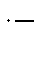
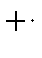

Next: Capped Bonds
Up: Miscellaneous Topics in
Previous: Behavior of sparkles in
- 1.
- They can be used as counterions, e.g. for acid anions or for
cations. Thus, if the ionic form of an acid is wanted, then the moieties
HX, H,
and X could be examined.
- 2.
- Two sparkles of equal and opposite sign can form a dipole for
mimicking solvation effects. Thus water
could be surrounded by six dipoles to simulate the solvent cage. A dipole of
value D can be made by using the two sparkles + and -, or using ++ and -. If + and - are used, the inter-sparkle separation would be
D/4.803Å. If ++ and - are used, the separation would be
D/9.606Å. If the inter-sparkle separation is less than 1.0Å (a
situation that cannot occur naturally) then the energy due to the dipole on its
own is subtracted from the total energy.
J. J. P. Stewart
Fujitsu Ltd. 2001